Spawanie
Połącz w jedną krzywą o jednakowym wypełnieniu i konturze
Przycinanie
Pierwszy zaznaczony obiekt ucina fragment drugiego zaznaczonego
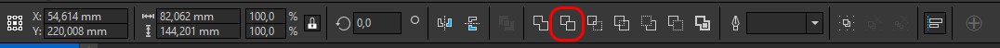
Część wspólna
Utwórz obiekt z obszaru pokrywania się obiektów
Uprość
Przycina nakładające się obiekt tak jak są widoczne
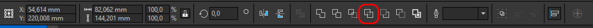
Wskaźnik
Zaznacza obiekty i pozwala dokonać transformacji
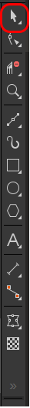
Kształt
Edytuje krzywe lub węzły
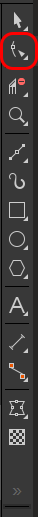
Krzywa Beziera
Rysuje krzywą
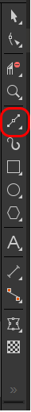
Prostokąt
Tworzy prostokąt, można wykorzystać do pomiarów
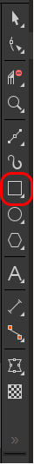
Elipsa
Tworzy elipse, można wykorzystać do pomiarów
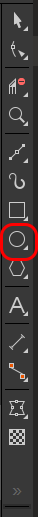
Obwiednia
Zmienia kształt obiektu przez wykorzystanie węzłów obwiedni
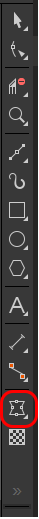
Przezroczystość
Nadaje tzw. efekt mieszania
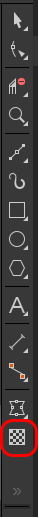
Inteligentne wypełnienie
Tworzy obiekt z nakładających się obszarów
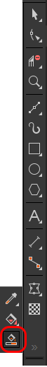
Efekty Płaskorzeźby
Nadaje efekt płaskorzeźby dla mapy bitowej
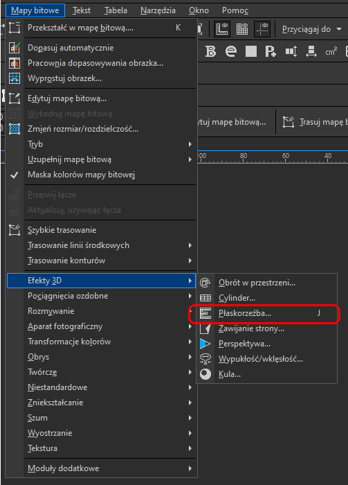
Krzywa Tonalna
Pozwala korygować jasność, kontrast i kolory dla mapy bitowej
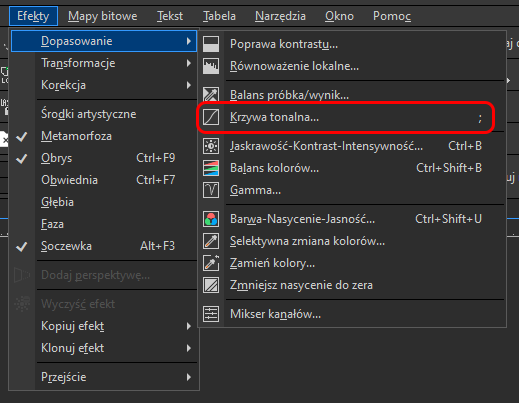
Rozbij
[Ctrl+K] Rozbija obiekt na ścieżki

Połącz
[Ctrl+L] Scala ścieżki w jeden obiekt

Obróć
Obraca zaznaczony obiekt o wpisaną ilość stopni
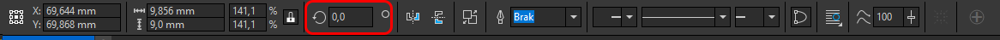
Odbij Lustrzanie
Odbija zaznaczony obiekt lustrzanie w pionie lub poziomie
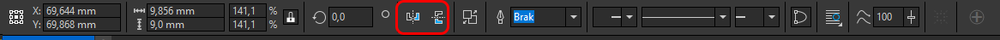
Zmiania rozmiaru
Zmienia rozmiar zaznaczonego obiektu lub grupy na wpisaną wartośc lub procent. Zamknięta kłódka zachowuje proporcje
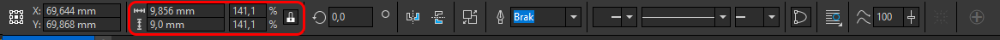
Efekt Mnożenia - Sublimacja
Nadaje "Mnożenie", symulując efekt sublimacyjny
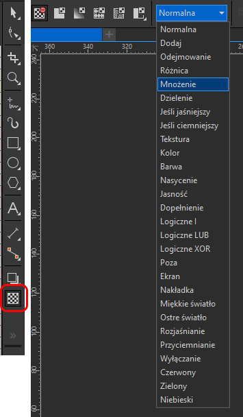
Dodanie 2% żółtego - Digital Print
Maszyny nie "widzą" białego koloru więc dodajemy do niego odrobinę żółtego. Dotyczy tylko map bitowych
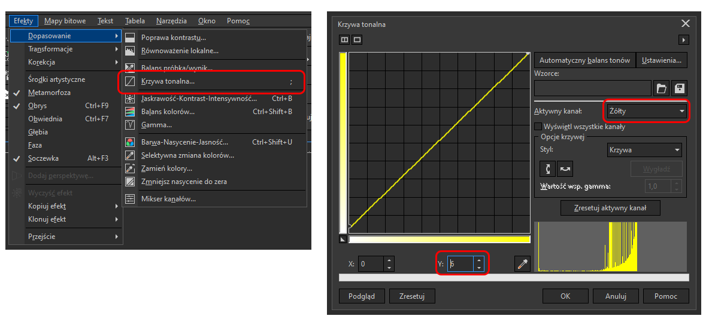
[ ]
Przenosi obiekt wyżej lub niżej

Dodaj węzły
Dodaje węzły gdy krzywa jest zaznaczona narzędziem "Kształt". Obiekt musi być zamieniony na krzywą [Ctrl+Q]
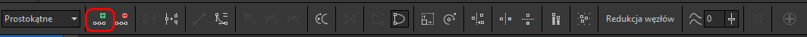
Redukcja węzłów
Redukuje ilość węzłów gdy krzywa jest zaznaczona narzędziem "Kształt". Usuwanie węzłów często powoduje zniknięcie całego obiektu. Obiekt musi być zamieniony na krzywą [Ctrl+Q]

Węzeł gładki/symetryczny/ostry
Zaznacz węzeł narzędziem "Kształt" aby modyfikować
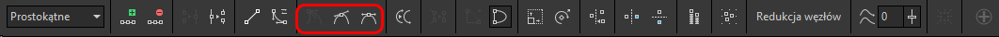
Węzeł końcowy/początkowy
Zaznacz węzeł narzędziem "Kształt" aby modyfikować
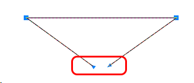
Menadżer obiektów
Podgląd na warstwy i obiekty. Uważaj na kontury, które zawsze zamieniamy na krzywe [Ctrl+Shift+Q]
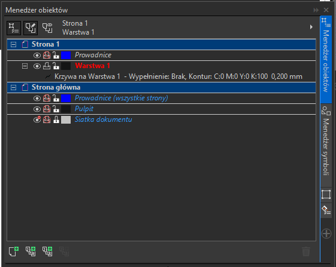
Właściwości obiektu
Pozwala zarządzać stylem m. in. konturu i wypełnienia
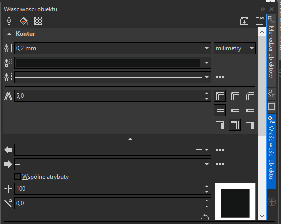
Obrys
Poszerza lub zwęża zaznaczony obiekt o wpisaną wartość
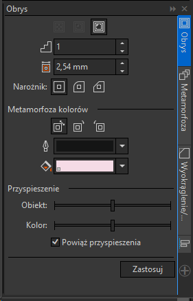
Soczewka
Nadaje tzw. efekt mieszania
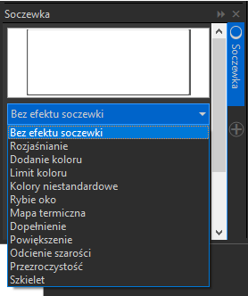
Wyrównanie i rozkład
Pozwala zarządzać położeniem obiektów np. zachować takie same odległości
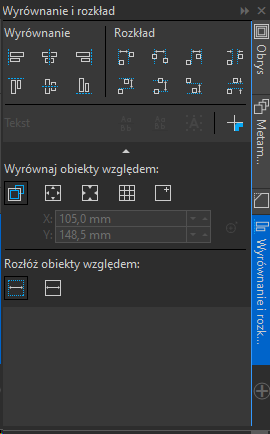
Maskowanie kolorów bitmapy
Pozwala ukryć zakres koloru, który wybierzesz "Pipetą"
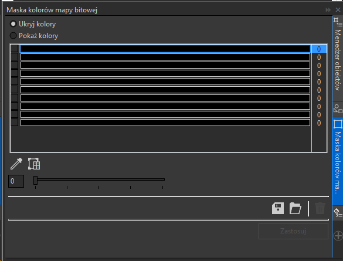
Praca z przesunięciem
Przesuwaj niepotrzebne obiekty strzałkami. Wartość wpisuj gdy nic nie jest zaznaczone
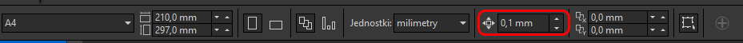
Zaznaczanie shift/ctrl/alt
[Shift] zaznacza kliknięte obiekty, [Alt] zaznacza dotknięte obiekty, [Ctrl] zaznacza obiekt z grupy

Usuwanie soczewek
Usuwa efekty soczewek/mieszania, są dwie opcje
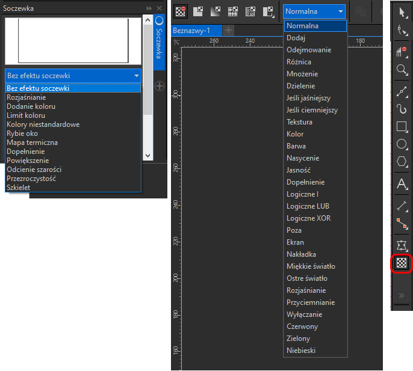
Zmiana tekstu na krzywe
[Ctrl+Q]

Zmiana na bitmape
Minimum 300 DPI
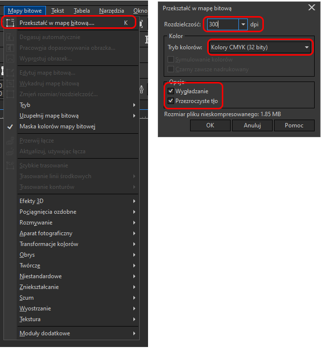
Trasowanie
Przed trasowaniem zmienić tryb bitmapy na RGB
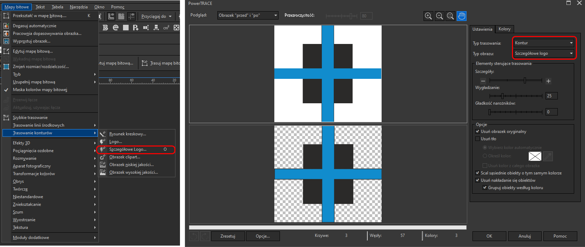
Zmiana Trybu kolorów
Zmienia tryb kolorów np. CMYK na RGB

Tonalne wypełnienie
Pozwala edytować wypełnienie tonalne/gradient
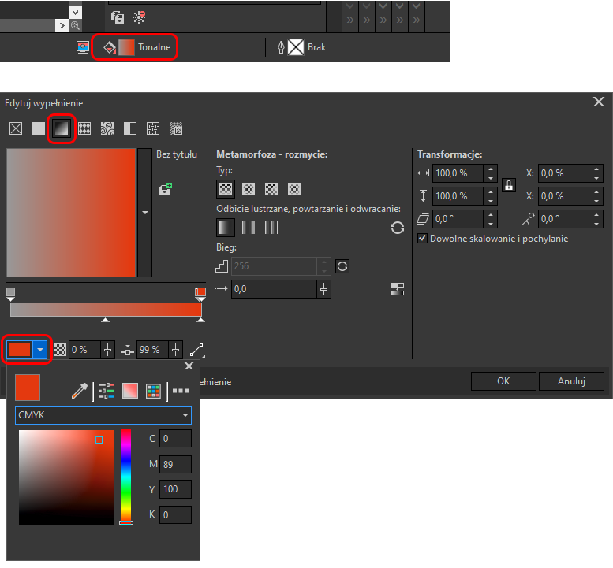
Pantone i HKS
Używamy tylko tych palet
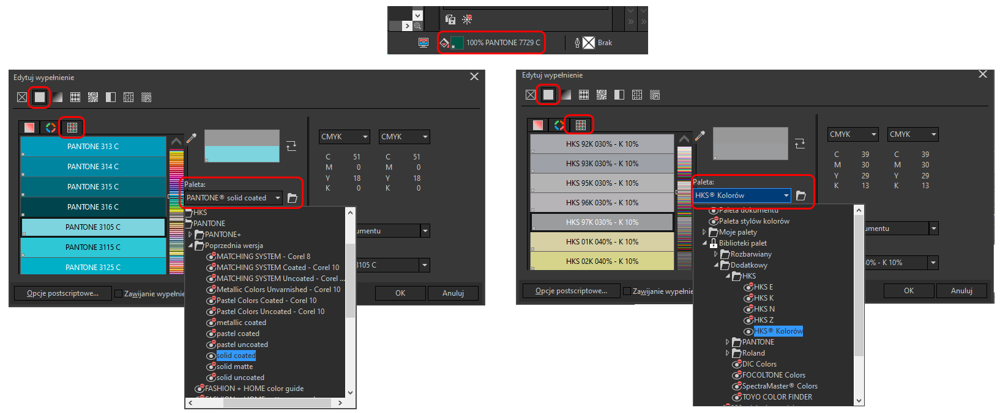
Zmiania DPI
Zmieniamy przez "Zmiana na bitmape"
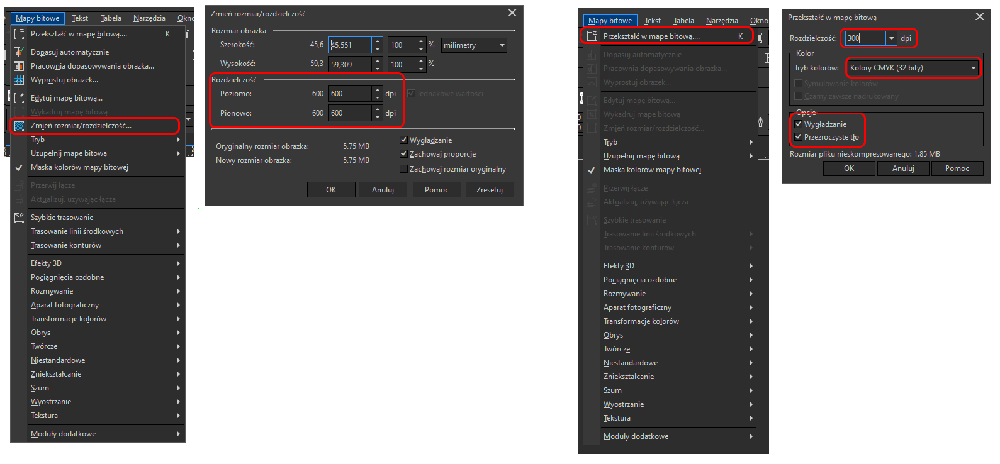